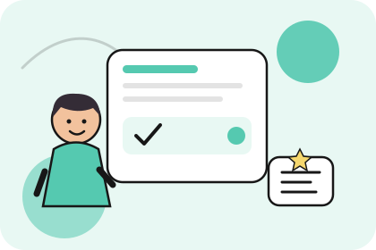

Уверенно рассказывайте о своём опыте
На собеседовании важно не просто знать профессиональные термины, а уметь последовательно представлять информацию о себе. Поэтому подготовка включает работу над содержанием ответов, подходящими формулировками и практикой диалогов. Репетиция помогает заранее выявить затруднения, сократить лишние паузы и научиться выражать основную мысль понятным языком.
Какие темы входят в подготовку
Вы будете учиться рассказывать об образовании, опыте работы, профессиональных навыках, выполненных проектах и карьерных планах. В программу могут входить ответы на распространённые вопросы работодателя, объяснение причин выбора вакансии, описание сильных сторон и обсуждение профессиональных достижений.
Особое внимание уделяется тому, как структурировать ответ. Вместо коротких фраз без пояснений полезно научиться приводить конкретные примеры, объяснять свою роль в выполненной работе и последовательно раскрывать мысль. Это помогает работодателю лучше понять опыт кандидата и делает общение более содержательным.
В зависимости от профессии можно включить лексику, связанную с определённой отраслью, а также ситуации, характерные для будущей должности. Если собеседование предполагает обсуждение рабочих задач, полезно потренироваться описывать процессы, объяснять принятые решения и задавать уточняющие вопросы. Подготовка может также охватывать вопросы, которые кандидат хочет задать работодателю в конце встречи.
Как проходит подготовка
Сначала определяются требования предстоящего собеседования и оценивается текущий уровень английского. Затем подбираются ключевые темы и формулировки, которые необходимо освоить в первую очередь. Ученик готовит ответы, тренируется произносить их вслух и учится адаптировать содержание к разным вариантам вопросов.
Практика проходит в форме диалогов и имитации собеседования. Это позволяет проверить не только знание слов и грамматики, но и способность понимать вопрос, быстро формулировать ответ и сохранять последовательность речи. После тренировки разбираются ошибки, неточные формулировки и моменты, в которых ответ можно сделать более ясным и убедительным.
Если уровень английского пока невысокий, акцент делается на базовых конструкциях и понятных способах рассказать о себе. При более высокой подготовке можно работать над профессиональной лексикой, развёрнутыми ответами и обсуждением сложных рабочих ситуаций.
Что даст курс
Вы сможете подготовить основные ответы, увереннее представлять свой опыт и лучше ориентироваться в ходе беседы на английском. Практика поможет систематизировать профессиональную лексику, научиться отвечать последовательно и замечать темы, требующие дополнительной подготовки. Курс поддерживает языковую подготовку к собеседованию, но не гарантирует трудоустройство: результат зависит также от требований работодателя, профессионального опыта и уровня владения языком.